Operating Functions on a Graphics Page
Graphics Toolbar
The Graphics Viewer toolbar allows you to navigate to and work with graphic pages.
Graphics Viewer Toolbar Operating Mode | ||
| Name | Description |
| Next Related Item | Allows you to scroll to and display the next graphical related item associated with the selected data point in System Browser. |
Previous Related Item | Allows you to scroll to and display the previous graphical related item associated with the selected data point in System Browser. | |
Zoom In (+20%) | Allows you to zoom in by + 20% on the active graphic with each mouse click. | |
Zoom Out (-20%) | Allows you to zoom out by - 20% on the active graphic with each mouse click. | |
100% | Displays the active graphic at 100% magnification. | |
Home | Returns the view of the displayed graphic to the state when the primary selection changed. | |
Zoom View | Displays the Zoom view and allows you to zoom in on the active graphic by adjusting the slider. 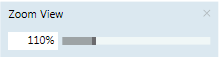 | |
Aerial View | Switches between Aerial View being visible or hidden in the Graphics Viewer area. | |
Zoom Real | Allows you to zoom in on the active graphic. To activate, click the icon. To de-activate, left-click anywhere on the graphic. | |
Scale to fit | Scales the graphic to fit in the viewing area. Once selected, the graphic resizes itself according to window size. | |
Point Centered display mode | Moves the selected point to the center of the graphic. | |
Fit to Secondary Selection | Allows you to calculate the depth and the viewport from the current selection. | |
Depths Navigation View | Switches between Depths Navigation view being visible or hidden in the Graphics Viewer area. | |
Show Status and Commands pane | Allows you to enable or disable the Status and Commands window from displaying. | |
Coverage Area mode | When this icon is enabled, it allows you to view the coverage areas on the graphic. | |
Page setup | Displays the Page setup view for the current graphic. | |
Displays the Print dialog box to print the current graphic. | ||

Graphics Symbol Selection
Below is a selection of typical 2D graphic symbols in Engineering mode. Display can vary when integrated into a project or in Online mode.
Graphic Symbols Used on Graphic Pages | ||
Description | Symbol 1 | Symbol 2 |
Damper Fire damper | ||
Damper air mixing | 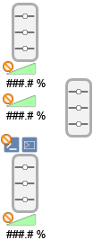 |
|
Energy recovery | 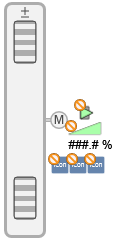 | 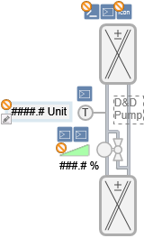 |
Fan | 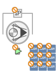 |
|
Filter with delta pressure | 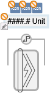 |
|
Heating coil | 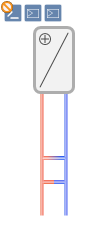 | 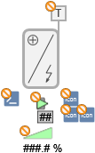 |
Humidifier | 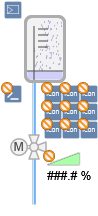 | 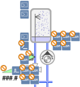 |
Pump Twin pump | 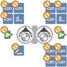 | |
Sensor temperature | 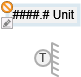 | 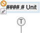 |
Thermostat Frost thermostat |
| |
Valve | ||